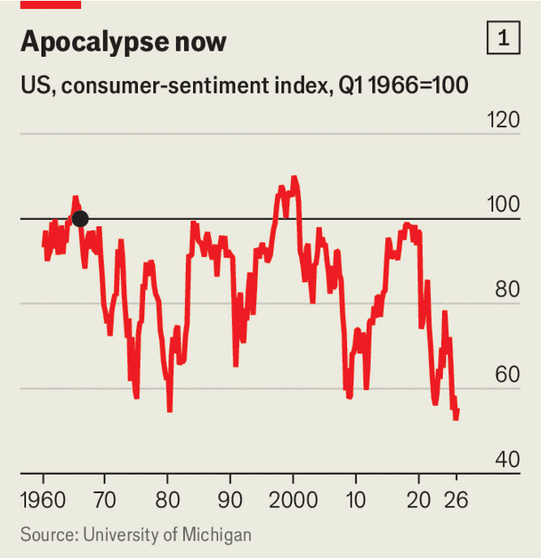
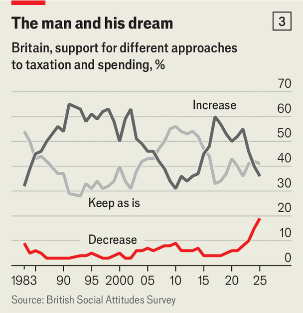

Gen-Z socialism, from Zohran to Zack and beyond
The world’s leftists are embracing a new set of economic ideas
June 4th 2026
DIFFERENT TIMES inspire different sets of leftist ideas. After the second world war, especially in Europe, socialism drew strength from heavily unionised heavy industry. It aimed not to abolish capitalism but to manage it, by nationalising utilities and redistributing income widely. After the financial crisis of 2007-09 “millennial socialists”, as The Economist dubbed them, argued that the post-war European model had created leaders too distant from ordinary workers and too complacent about climate change. Their solution was to put workers on company boards, create employee-owned co-operatives and subsidise green technology, all to create a more durable, fairer and greener capitalism.
Now the latest wave of socialism is swelling. It is propelled partly by outrage over the humanitarian crisis caused by Israel’s war in Gaza. But for many voters Gaza has come to stand for something larger: a sense that their governments lavish attention and money on things other than their citizens’ problems at home. They desire the 21st-century version of the “square deal” offered to Americans by Theodore Roosevelt in 1904.
Today this means taking on a broken system that enriches powerful interests, the argument goes, since the modern economy screws over anyone who is not on the Forbes list. GDP is larger than ever, and yet the rent is too high, lunch costs $28 and good work is hard to find.
The new socialists thus want the state to dictate the prices of many goods and services, especially essentials such as food and rent. Where money is required it will come, almost exclusively, by squeezing the very wealthiest. It is a form of retail politics that appeals not to notions of the common good, as in prior waves of socialism, but to people’s narrow self-interest. Lower my rent! Cut my bills! Give me free buses! Protect my job! The solutions are naive, and often unworkable. But the message is so simple, and so attractive, that this Gen-Z socialism is gaining adherents across the democratic world.
Zohran Mamdani, New York’s newish mayor, is one. Katie Wilson, a fellow traveller, runs Seattle. Far-left candidates such as Graham Platner in Maine and Abdul El-Sayed in Michigan hope to become senators in November’s midterm elections. In Wisconsin, another left-winger, Francesca Hong, is surging in the polls for the governorship. Betting markets put Alexandria Ocasio-Cortez, a socialist congresswoman from New York, second only to Gavin Newsom as the most likely Democratic nominee for president in 2028.

In Canada, Avi Lewis, the husband of Naomi Klein, a radical-left author, recently became the leader of the New Democratic Party, the third-biggest national party. In Britain the Green Party, led by Zack Polanski, is surging. In Germany, Die Linke, a left-wing outfit, is polling at its highest level in years. In France, Jean-Luc Mélenchon, an ageing leftist with youth appeal, is eyeing next year’s presidential race.
Mr Mamdani wants to freeze rents on New York’s rent-stabilised apartments, open municipally owned grocery stores selling cheap staples and offer universal free child care until the age of five. Before a recent state election Die Linke promised the abolition of “all fees from day care to university”. Mr Polanski’s Greens would impose rent controls and make buses free for young people; the Australian Greens would like to make all public transport free. “Think Costco—but run as a public service,” says Mr Lewis of his plan to create public grocery stores across Canada.
Voters rejected millennial socialism. In 2019 Jeremy Corbyn, a baby-boomer beloved of young Britons, led the Labour Party to its worst result since 1935. Bernie Sanders, that movement’s even wrinklier American face, lost the Democratic presidential nomination in 2016 and 2020. In France, Mr Mélenchon didn’t make the presidential run-off. Socialists had to look for a new approach. The post-pandemic economy has provided the opening.

In the 2020s an unprecedented chasm has emerged between the economy on paper and the economy as lived experience. Even as the rich world enjoys low unemployment, record real household incomes and soaring stockmarkets, people have rarely been so gloomy.
Since 2022 American consumer confidence has hovered around an all-time low (see chart 1). During the pandemic, 20% of Europeans thought cost-of-living pressures or housing were one of the two biggest issues facing their country. Now 36% think this, even as concerns about climate change, unemployment and immigration fade away (see chart 2). James Meadway, a socialist thinker, sums up the left’s belief: economic growth “has become detached from improvements in living standards”.
People blame both businesses and the state for their predicament. A poll in 2024 by Navigator, a research firm, found that three in five Americans thought “corporate greed” was a “major cause” of inflation. This may be why they seem greedier themselves. The share of Britons who want the government to “increase taxes and spend more” on public services has dropped sharply (see chart 3), while the share who think that income tax is “unfair” or “very unfair” has doubled since 2019. The share of Americans who believe their federal income tax is “too high” is hovering around a two-decade high. In France the share who trust the central government to use public funds well fell from 33% in 2023 to 22% in 2025.

People also increasingly blame technology, and especially artificial intelligence. They fear that mushrooming data centres will push up electricity prices and that AI powered by these server farms will take their job. More than 60% of Americans, Britons and Canadians say that AI products and services make them “nervous”, compared with a global average of around 50%. A recent poll of young adults in America found that 59% thought AI was “a threat to their job prospects”.
And if you think today’s economy is a scam, Gen-Z socialists warn, just wait for the AI-powered economy of tomorrow. A tiny number of tycoons stand to gain unprecedented power and riches at the expense of everyone else. At a recent university ceremony, students booed Eric Schmidt, a former chief executive of Google, every time he mentioned the dreaded two letters.
So what do people want done about all this? Voters are, on paper, less socialist than a few years ago. After jumping to a peak of 5% in 2018-21, the share of Americans who described themselves as “extremely liberal” has fallen to 3.4%. Yet this is not because people have become more right-wing, but because they have lost interest in -isms. A poll by Harvard University’s Institute of Politics found that among young Americans, support for both capitalism and socialism fell sharply between 2020 and 2025 (see chart 4).

In place of ideology, people want someone to raise their incomes and cut their costs. Not since 1975 have so many Americans wanted government action to “improve the standard of living” of the poor, according to the General Social Survey, a long-running poll. They want someone to stop AI from wrecking society.
An influential group of socialist academics provides the intellectual ballast for these views. The work of Isabella Weber of the University of Massachusetts, Amherst, suggests that businesses’ pricing power means that the modern economy serves executives and shareholders better than it does ordinary people. In a paper last year Ms Weber and her colleagues analysed companies’ earnings calls, finding that many firms took advantage of inflation to “protect or even increase profits”.
Many economists point out that wage increases, not price gouging, have driven much recent inflation. Nonetheless Ms Weber’s ideas, along with associated ones such as the “K-shaped economy”, where the rich win and everyone else loses, have gained traction.
Others go further, suggesting that economic growth can never give people what they really need. Jason Hickel (an anthropologist) and Kohei Saito (a philosopher) argue, among other things, that GDP growth is socially destructive, forcing people to work too hard to make ends meet. Mr Saito’s “Slow Down: The Degrowth Manifesto” was a hit in Japan, selling more than 500,000 copies. Mr Hickel’s ideas are vague, but they are hip among European politicians; in 2023 Ursula von der Leyen, head of the European Commission, spoke at a “beyond growth” jamboree at the European Parliament.
In response to these political and intellectual developments, Gen-Z socialist politicians are trying out a new message. First, chuck out “woke” talking-points that, in a world of unprecedented anger about the economy and distaste for ideology, feel less urgent. No more talk of “structural racism” or DEI. The “climate crisis”, the ultimate collectivist problem, gets relatively little airtime—even among Mr Polanski’s Greens. Democrats have gone quiet about a “Green New Deal”. Mr Platner even vows to abolish federal taxes on petrol, something unthinkable for a climate-cuddling millennial-socialist politician. Traditional tax-and-spend, the bedrock of old socialist thought, is also out.
Gen-Z socialism is instead all about making life more affordable and jobs more secure, especially against AI. Proponents favour just about anything that provides immediate relief over long-term investment projects with uncertain returns. Some want free public transport. Most love rent controls. Virtually all pledge to make child care free. Until what appeared to be a narrow defeat in a primary on June 2nd, Tom Steyer campaigned for governor of California on “a jobs guarantee for the AI era”, promising “good-paying jobs and benefits for workers impacted by AI”. Mr Lewis would pause data-centre construction in Canada and opposes “any attempts to replace public servants with chatbots”.
The sharpest intellectual break between the Gen-Z socialists and their predecessors is in who pays for all these perks and protections. Leftists of yore envisaged broad-based tax increases. In the late 2010s Mr Sanders suggested levying a 4% surcharge on incomes over $29,000 a year (the vast majority of American households). To the extent that they propose tax rises, the new socialists focus entirely on the uber-rich. Mr Polanski wants an annual tax of 1% on wealth over £10m ($13m) and 2% over £1bn (Britain has just 100 or so billionaires). Mr Mamdani is implementing an annual surcharge on some luxury residential properties. Washington state is adopting a “millionaire’s tax” of 9.9% on earnings over $1m.
Additional money will, the theory goes, come from making government more efficient. Verdant, Mr Meadway’s think-tank, which is close to the Greens, has argued for a “DOGE of the left”, named after Elon Musk’s short-lived effort to eliminate wasteful federal spending under Donald Trump. On May 28th Mr Mamdani promised COGE—the Commission on Government Efficiency—for his city.
Most of these ideas are batty. Rent controls fail to make housing more affordable by discouraging investment in the sector, which in turn raises rents by constricting supply. Trying to stop AI will cause investment and jobs to move elsewhere. Efficiency savings are great on paper but hard to find in practice: just ask Mr Musk. And relying so heavily on taxing plutocrats is risky: there simply are not that many of them and they can move (as some have from California in anticipation of a potential extra tax on billionaires).
Regardless, plenty of non-socialists are entertaining policies to make Mr Mamdani proud. Middle-of-the-road Labourites are toying with price caps on groceries, centrist Democrats have proposed tax cuts for anyone outside the top few per cent of high earners and even MAGA Republicans are partial to pauses in data-centre construction. Whether or not more Gen-Z socialists succeed at the polls, Gen-Z socialism is not going away.■
For more expert analysis of the biggest stories in economics, finance and markets, sign up to Money Talks, our weekly subscriber-only newsletter.